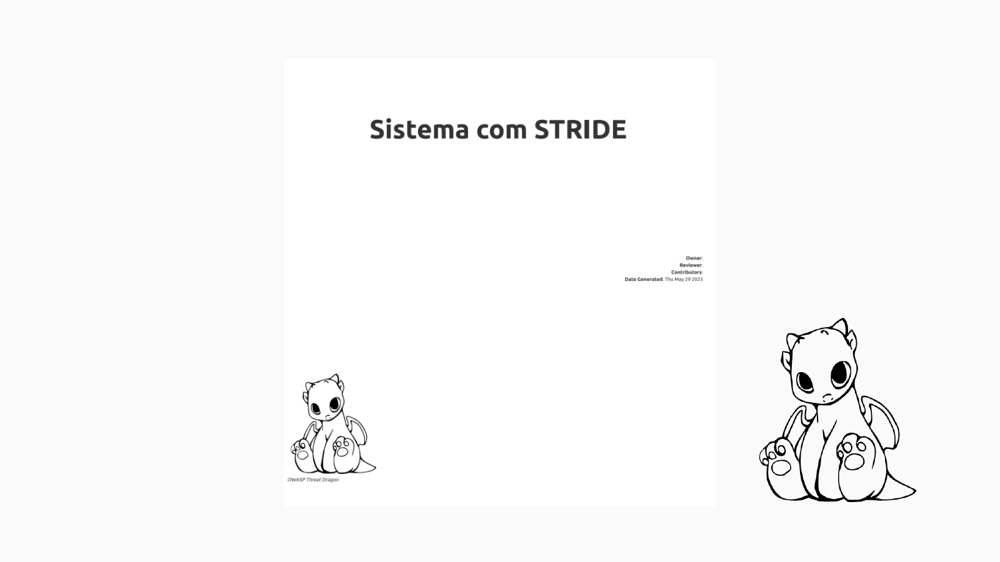
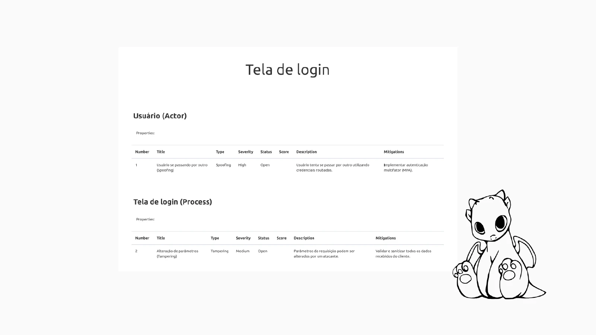
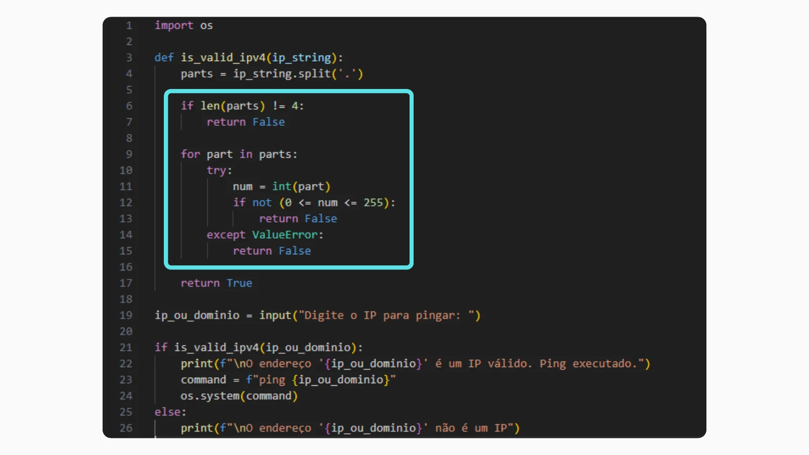
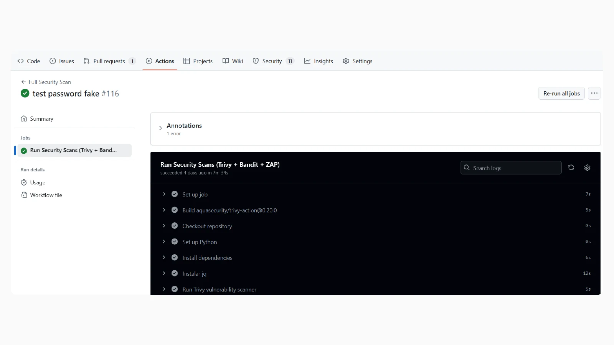
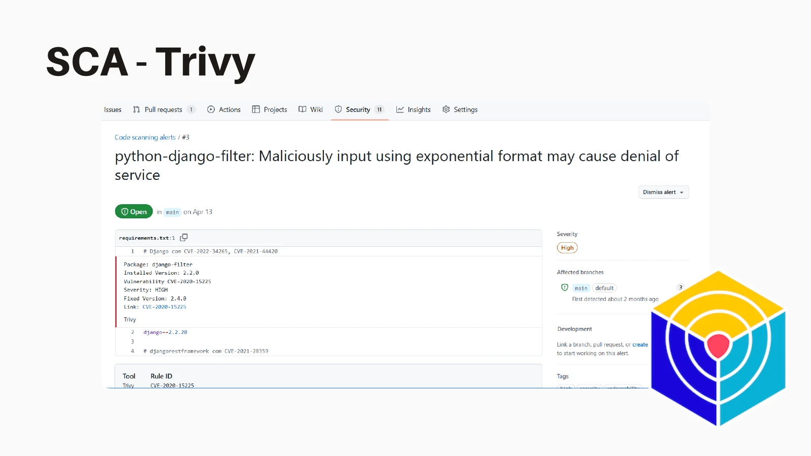
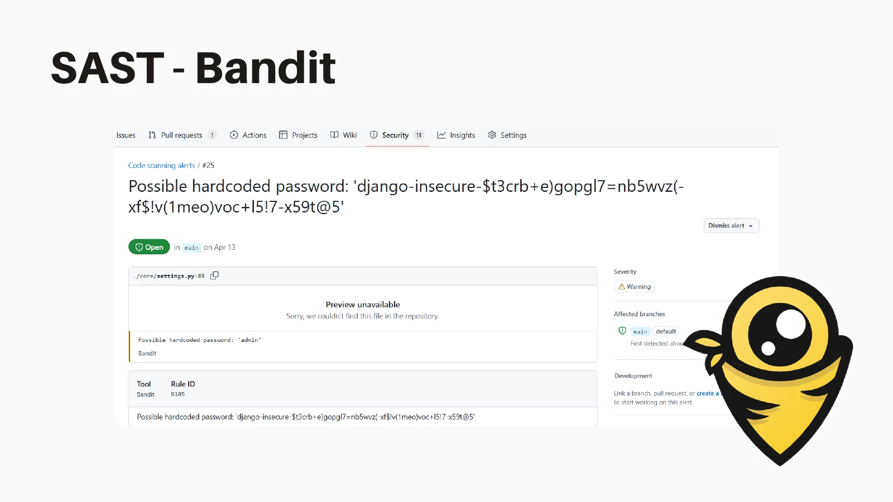
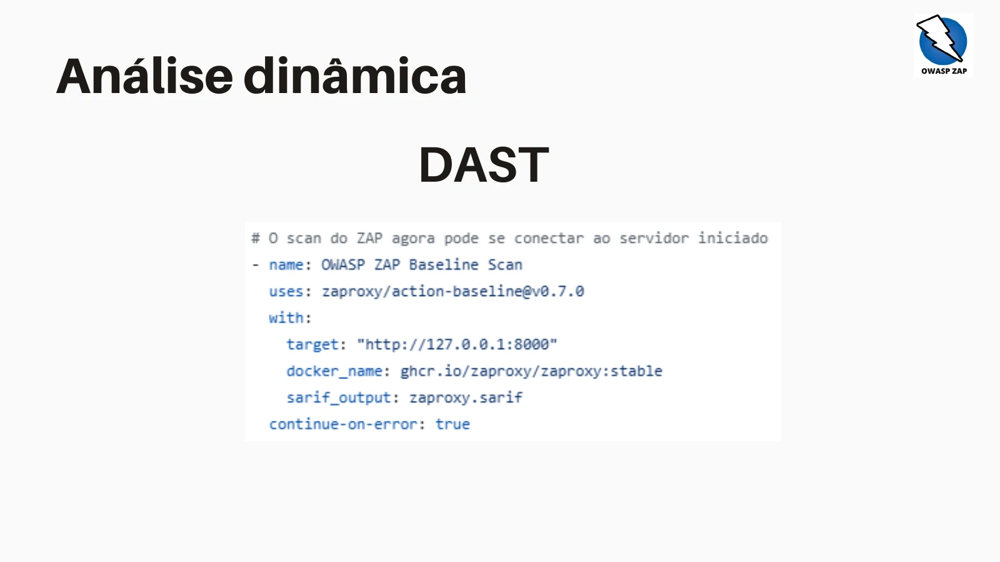
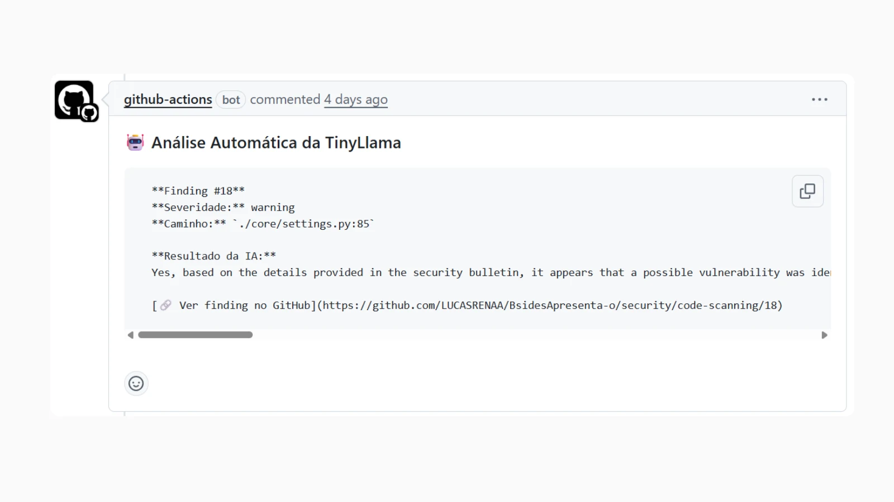

Integrating Security in S-SDLC
with an open source pipeline and AI


Who am I
- Graduated in Systems Analysis and Development from IFPE.
- 7 years in technology — 5 of them focused on application security.
- Experience with Python, automation, security, and web development.
- Practical experience in SAST, DAST, threat modeling, and pentests.
- Talks at UPE, UNICAP, IFPE, Rec’n’Play, and TDC.
From DevOps to DevSecOps
Security is no longer a step at the end and is now born along with the code: shift-left, automation, and quick feedback.
Why integrate security?
- Find problems while the team is still designing and developing.
- Reduce rework and shorten the path between discovery and remediation.
- Deliver quickly, with security as a shared responsibility.
Security throughout the lifecycle
References for the work
- ASVS: verification requirements for applications.
- MASVS: security requirements for mobile applications.
- OWASP WSTG: web security testing guide.
Who participates?
- AppSec: guides requirements, modeling, and security validation.
- Development: implements controls and fixes vulnerabilities.
- SRE and DBRE: collaborate in operation, infrastructure, and data.
- PO: participates in prioritization and acceptance criteria.
Threat modeling
- Understand the system, its data, and trust boundaries.
- Identify threats and possible design flaws.
- Transform abuse scenarios into requirements and controls.
- Support: OWASP Threat Dragon, Microsoft Threat Modeling Tool, or spreadsheets.
Modeling with STRIDE

Example of threat modeling documentation. · Click on the image to expand.
From model to requirement

Example of login screen analysis in the original material. · Click on the image to expand.
SCA · dependencies
- Analyze libraries and components used by the application.
- Identify dependencies with known vulnerabilities.
- Evaluate the update and validate the effect of the fix.
- In the demonstration: Trivy.
SAST · source code
- Look for potentially insecure code patterns.
- Review inputs, dangerous calls, and configurations.
- Investigate findings with code context.
- In the Python demonstration: Bandit.
Example: “ping” an IP
import os
ip = input("Enter the IP to ping: ")
command = f"ping {ip}"
os.system(command)Command injection
Original demonstration of the problem in the ping program. · Click on the video to play.
Review questions
- What kind of data should the function accept?
- Is the input validated before reaching a sensitive operation?
- Are there passwords or other secrets in plain text?
- Does complexity make it hard to understand and test the behavior?
Manual validation - own code

Attempt to validate address without a parsing library. · Click on the image to expand.
Manual validation - third-party code
import ipaddress
import subprocess
try:
ip = str(ipaddress.ip_address(input("IP: ")))
except ValueError:
print("Invalid IP address")
else:
subprocess.run(["ping", "-c", "4", ip], check=True)Example adapted for Linux: ipaddress is part of the Python standard library.
DAST · running application
- Test the behavior of the application through its interfaces.
- Investigate vulnerabilities observable during execution.
- Run tests in an authorized test environment.
- In the presented pipeline: OWASP ZAP.
Dynamic analysis results

Findings panel shown in the old presentation. · Click on the image to expand.
Tools entering the pipeline
Map flows, assets, trust boundaries, and abuse scenarios before the code.
Static analysis to locate insecure patterns and problems in the code.
Detect credentials, tokens, and secrets exposed in the repository.
Vulnerabilities in containers, operating system, packages, and repositories.
Complement: automated scripts and dynamic scanners to validate the running application.
Open Source Pipeline + AI
Small, automated, and contextualized controls throughout delivery.
CI/CD: integrate and deliver
- Continuous integration: integrate changes frequently and run automated builds and tests.
- Continuous delivery: maintain a validated artifact ready for deployment.
- The pipeline connects these stages and includes security checks.
GitHub Actions
- Automate build, tests, and deploy from repository events.
- Organize execution into workflows, jobs, and steps.
- Also automate labels, issues, and other repository tasks.
A first workflow
name: Simple Build
on: [push]
jobs:
build:
runs-on: ubuntu-latest
steps:
- uses: actions/checkout@v4
- name: Hello World
run: echo "The workflow has run!"Where do jobs run?
- GitHub-hosted: environment hosted by GitHub, ready to run the workflow.
- Self-hosted: environment provisioned and managed by the team itself.
- The choice considers maintenance, customization, and access to necessary environments.
Let's get our hands dirty
- Trigger the workflow with a change in the repository.
- Run Trivy for dependencies and Bandit for Python.
- Save the reports and inspect the findings.
- Run ZAP against the application in the test environment.
Workflow running

Record of GitHub Actions execution. · Click on the image to expand.
Trivy: dependency finding

Example of vulnerability found in the original demonstration. · Click on the image to expand.
Bandit: code finding

Example of secret in code pointed out in the demonstration. · Click on the image to expand.
Publish the reports

Static analysis steps and sending SARIF results. · Click on the image to expand.
ZAP in the pipeline

Dynamic analysis configuration presented in the PDF. · Click on the image to expand.
Bonus: AI comments on PR

Comment produced by experimental AI integration. · Click on the image to expand.
Experiment evolution
- In the old material: expand code analysis by AI.
- Improve comment quality and evaluate results.
- Up next: connect this experiment to the triage and context proposal of the current HTML.
When coding is no longer the bottleneck
More code generated in less time also means more surface to review.
From alert to context
Conceptual example: less noise,
more human focus.
How AI changes S-SDLC
Living artifacts of intent — such as intent.md — help humans and agents share context, constraints, and security criteria.
AI helps draft test cases, negative scenarios, validations, and evidence alongside implementation.
Scanners remain objective; AI aids in triage; people focus energy on critical code, architectural decisions, and real risk.
Used scripts

References of the repositories shown in the original material. · Click on the image to expand.
Thank you very much!
Open source automation is the foundation. AI adds context and prioritization. The risk decision remains human.